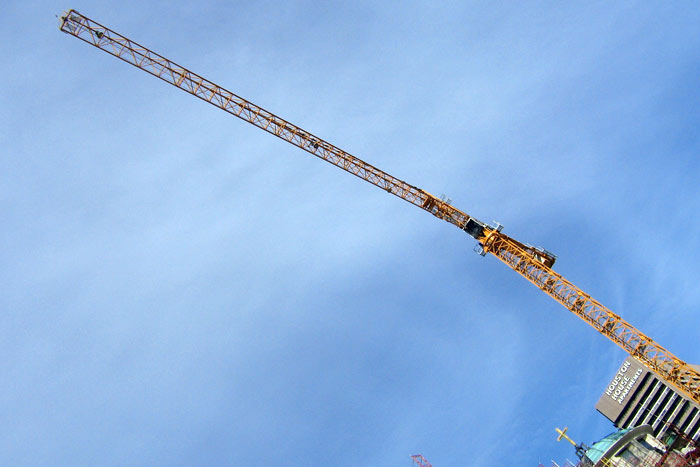
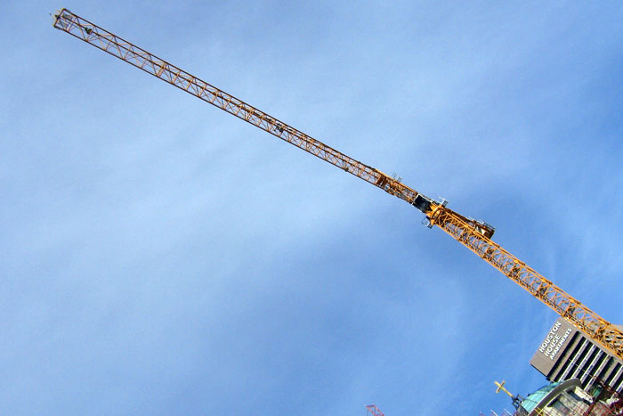
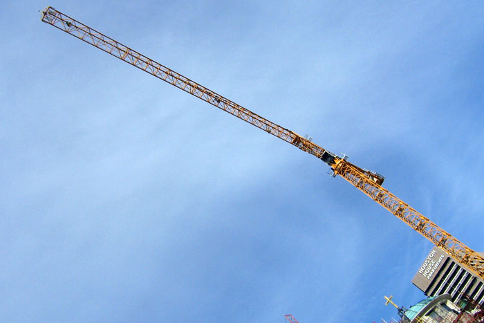

<head>
<script type="text/javascript" src="jquery-1.6.1.min.js"></script>
<script type="text/javascript" src="jquery.fotorama-0.3.js"></script>
<link rel="stylesheet" type="text/css" href="jquery.fotorama-0.3.css"/>
</head>
<body>
<div class="fotorama">
<img src="img/1.jpg"/>
<img src="img/2.jpg"/>
<img src="img/3.jpg"/>
</div>
</body>
<script type="text/javascript">
$(function() {
$(".fotorama").fotorama();
});
</script>

No settings for cropping, easing, autoplay, preload, carousel follow and other noise! No problem with multiply galleries, any desired aspect ratio and size.


|
|
|
|
|
|
|
|
|
|
$("#fotorama-bw").fotorama({
transitionDuration: 100, // number, default: 500
hideThumbs: true, // boolean, default: false
caption: $("#fotorama-bw-caption") // jQuery, default: false
});


© Artem Polikarpov, 2011
artpolikarpov@gmail.com